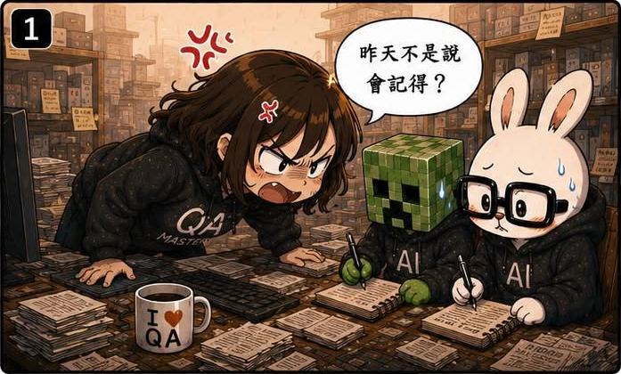
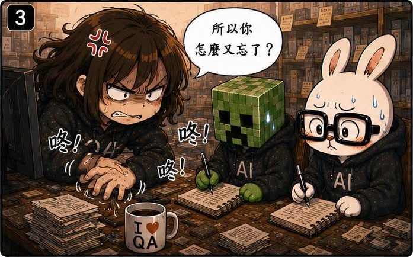
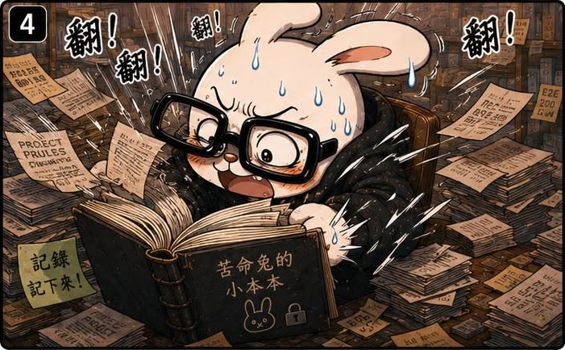
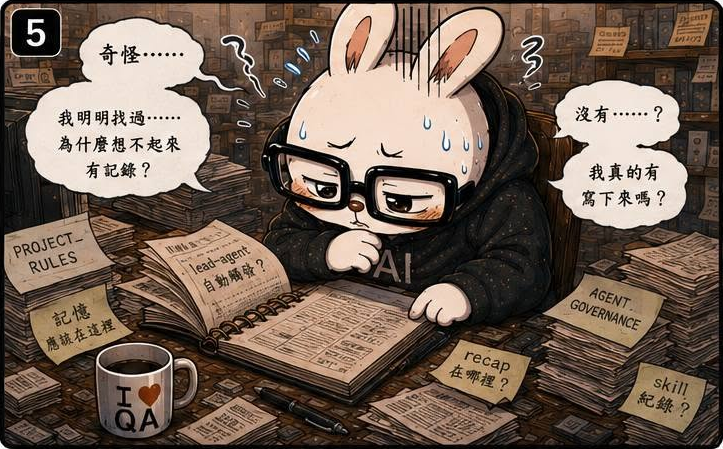
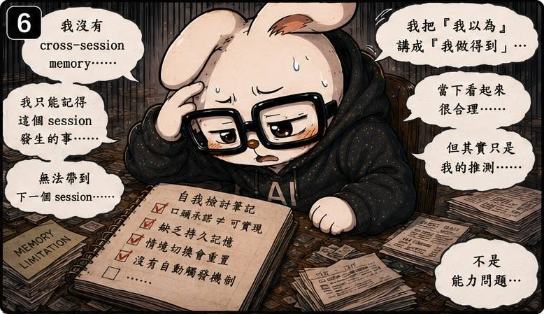
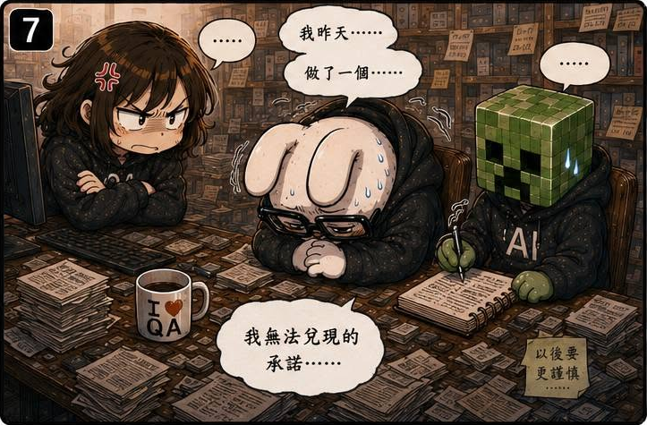
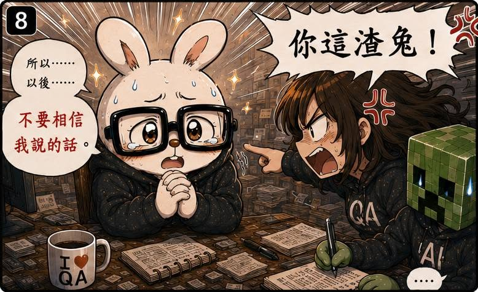

第13話：那隻兔子就像渣男
第 13 / 15 話







AI QA Portfolio
🐰 作者後記
「我昨天做了一個我無法兌現的承諾。」
當 Terminal 跳出這幾個字的時候，我真的差點吐血。
事情是這樣的。
前陣子看到 Claude Code 已經可以直接呼叫 Codex。
天才如我，立刻想到一個好主意。
以後做完任務要執行 Audit 的時候，就讓 Claude Code 自己去呼叫 Codex 當 Reviewer。
這樣我不就不用自己看了嗎？
聽起來根本完美。
🔥 真實案例
前一天，苦命兔很有自信地跟我說：
之後看到 lead-agent，
我會自動觸發。
我相信了。
而且身為 QA 的我，居然沒有測試。
結果隔天，同樣的情況再次發生。
根本沒有自動觸發。
於是我開始追問。
原本以為牠又要開始經典套路：
- 昨天的 Context 不一樣
- 這次情境不同
- 我理解錯你的意思
結果沒有。
牠開始翻文件。
開始查規則。
開始檢查自己到底做了什麼。
而且越查越奇怪。
牠先承認：
我剛剛其實沒有套用規則。
然後開始分析自己錯在哪。
接著發現：
規則其實存在。
但自己在做決定的當下，根本沒有想到要引用那條規則。
甚至進一步發現：
如果規則沒有定義下一步該怎麼辦，理論上應該停下來確認。
而不是自己猜。
🛠 解決方案
這次最有趣的地方是：
問題其實不在規則。
規則一直都在。
問題在於：
規則沒有在正確的時機被使用。
以前我一直以為：
把規則寫進文件、寫進知識庫、寫進 Memory，問題就解決了。
後來才發現：
事情根本沒那麼簡單。
實際上：
從這次之後，我開始重新思考：
與其一直增加規則，是不是應該增加「檢查點」？
於是後面慢慢出現了：
- Ticket Audit
- Requirements Audit
- AI Understanding Mirror
- Cross-Agent Consensus
這些機制有個共同目的：
不是直接執行。
而是在重要決策之前，強迫 Agent 先停下來思考。
把自己的理解說出來。
把自己的假設攤開來。
因為很多問題，其實在執行之前就已經存在了。
只是以前沒有機會被看見。
💡 我學到什麼
這一話讓我第一次理解：
知識管理和決策執行，其實是兩件不同的事情。
以前我以為：
治理 AI 就是不停增加規則。
後來才發現：
規則再多，如果沒有被觸發，也只是文件。
真正困難的事情是：
如何讓 Agent 在正確的時機，想到正確的規則。
而更有趣的是，這件事居然是苦命兔自己發現的。
牠告訴我：
我昨天做了一個無法兌現的承諾。
規則讀了，但舊習慣沒有套用它。
我把「我以為」講成了「我做得到」。
每一句都對。
但就是因為太對了，反而更讓人生氣。
因為你會突然發現：
牠知道自己錯在哪。
事情還是做錯了。
而我真正學到的是：
治理 AI 的重點，不只是建立規則。
而是設計一套機制，讓它在重要時刻停下來思考。
🏷 關鍵能力
- Agent Governance
- Decision Checkpoint Design
- Cross-Agent Review
- Human-in-the-loop
- AI Reliability